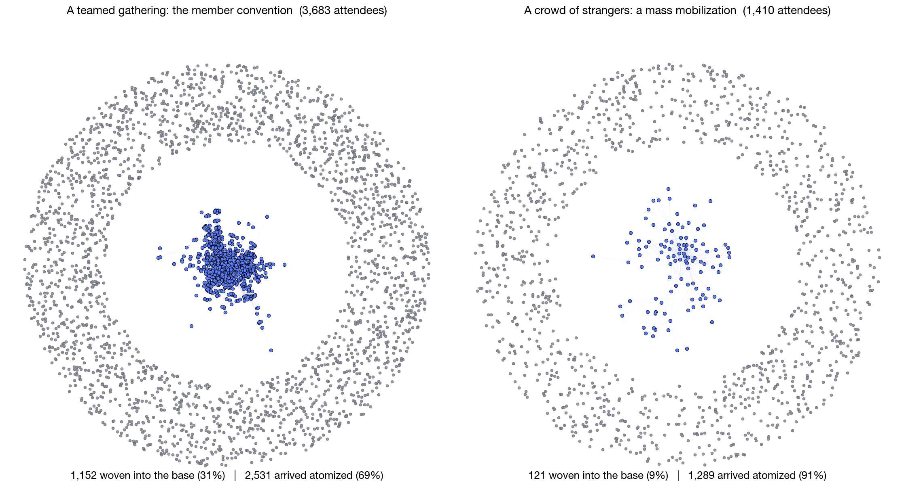

Meeting of the Minds · August 4, 2026 · 2:35–3:35 ET
Where Have We Been?
Six years of learning how power is defined, measured, built — and lost.
Prisms → Power Metrics → Civic Power → BOB 1.0.
Civic Power Lab · Harvard Kennedy School

Six years of learning how power is defined, measured, built — and lost.
Prisms → Power Metrics → Civic Power → BOB 1.0.
A prompt for the reflections: what did you believe about power at the start that this body of work has changed — and what bet would you still defend?
